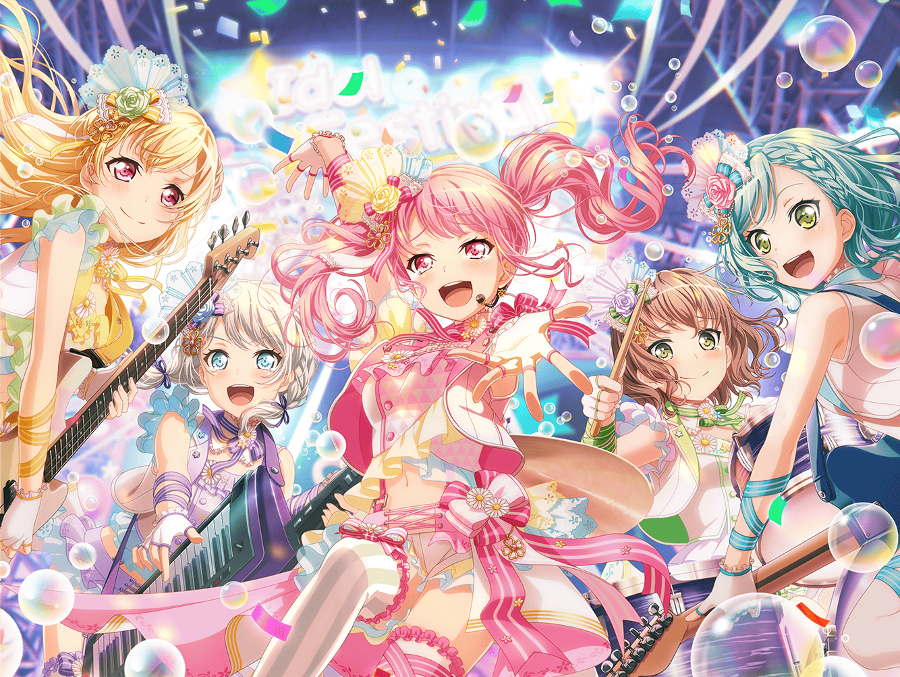

Apa itu BanG Dream?

BanG Dream atau dikenal juga sebagai bandori (バンドリ), adalah warabala media musik jepang yang dimiliki oleh Bushiroad.
Dibuat oleh presiden Bushiroad takaaki kidani pada januari 2015 dengan cerita asli Ko Nakamura,
proyek ini dimulai sebagai sebuah manga sebalum dikembangkan ke media lainnya. selain beberapa adaptasi manga lainnya, warabala ini terdiri atas
adaptasi serial anime, konser live, sejumlah CD musik dan Video, dan game mobile rhythm bernama BanG Dream! Girls Band Party
yang dikembangkan oleh Craft Egg.
Premis BanG Dream!
Premis dari waralaba ini berdasarkan di sekitar band wanita, di mana anggotanya juga menjadi pengisi suara dari anime dan game mobile.
Per tahun 2020, proyek ini memiliki tujuh grup band, dengan empat di antaranya mampu memainkan instrumen dari karakter masing-masing.
Band Band Dalam BanG Dream!
Band pertama, Poppin'Party, dibentuk pada tahun 2015, yang kemudian ditambahkan beberapa band baru ke dalam waralaba pada tahun 2017 bersamaan dengan peluncuran game mobile: Afterglow, Pastel*Palettes, Roselia dan Hello Happy World.
Pada akhir tahun 2018, sebuah band pendukung bernama The Third berganti nama menjadi Raise a Suilen dan bergabung ke dalam serial ini, yang kemudian disusul oleh band ketujuh bernama Morfonica pada tahun 2020.
Poppin'party
Dibentuk oleh Kasumi Toyama dalam perjalanannya menemukan kembali perasaan meluap-luap yang pernah ia rasakan. Walaupun kemampuan dasar mereka bukanlah yang terbaik, mereka mengatasi hal tersebut dengan semangat mereka serta hubungan yang akrab satu sama lain. Nama mereka merujuk dari tema "popping" yang digunakan oleh band dan musik mereka.
Roselia

Band gothic rock populer yang telah diakui pada tingkat semi-profesional dan telah menarik perhatian industri musik. Nama mereka adalah kombinasi dari "rose" dan "camellia", referensi ke mawar biru karena mewakili tujuan band untuk mencapai hal yang mustahil. Dengan musik yang juga mengandung kecenderungan symphonic metal, pertunjukan Roselia didasarkan pada visual kei dengan kostum yang rumit dan visual yang mengesankan.
Afterglow
Band yang dibentuk oleh Ran Mitake bersama teman-teman masa kecilnya. Mereka memiliki gaya yang keras dengan musik yang bertemakan pemberontakan. Nama band mereka berasal dari istilah bahasa Inggris untuk penampakan langit setelah matahari terbenam.
Pastel * Palettes

Grup idola yang dibentuk menjadi "band idola" sebagai gimmick oleh agen bakat. Meskipun pada awalnya mereka tidak diharapkan untuk memainkan instrumen mereka sendiri dalam pertunjukan langsung, mereka mulai melakukannya setelah kesalahan teknis mengganggu debut mereka. Pendekatan orisinal ini akhirnya menjadikan mereka grup populer. "Pastel＊Palettes" mengacu pada kepribadian band yang penuh warna dan beragam, dengan pakaian masing-masing anggota yang cerah dan berenda dan penggunaan harmonisasi yang berat di antara kelimanya dalam lagu mereka
Hello, Happy World!
Halo, Happy World!, sering disingkat HaroHapi (ハロハピ) dibentuk oleh Kokoro Tsurumaki dalam mimpinya untuk membuat orang-orang tersenyum di seluruh dunia. Band ini populer di kalangan anak-anak dan mereka sering tampil di taman kanak-kanak dan rumah sakit anak-anak, meskipun musik mereka memiliki daya tarik di semua rentang usia dari band besar ("Goka! Gokai!? Phantom Thief!") hingga hip hop ("Sekai Nobbinobi Treasure!"). Mereka diberi nama berdasarkan misi tunggal mereka untuk "membuat dunia bahagia" melalui musik mereka. Slogan mereka adalah "Happy, Lucky, Smile, Yay~!" ("Happy, Lucky, Smile, Hooray~!" di lokalisasi), yang juga disingkat menjadi "HLSY".
Raise A Suilen


Raise A Suilen (ditulis sebagai RAISE A SUILEN dan kadang-kadang disebut sebagai RAS) adalah grup yang awalnya dibentuk sebagai band cadangan untuk mengisi instrumen pertunjukan langsung oleh grup yang pengisi suaranya tidak dapat memainkan musik.Menjadi band ketiga di BanG Dream! semesta untuk tampil live (setelah Poppin'Party dan Roselia), RAS awalnya hanya disebut sebagai The Third (Beta) sebelum menerima namanya sendiri dan karakter di alam semesta selama konser langsung kedua mereka pada 17 Juli 2018.
Morfonica
Morfonica terdiri dari lima siswi kelas satu di Akademi Wanita Tsukinomori yang bergengsi. Mirip dengan Poppin'Party, Roselia, dan Raise A Suilen, pemeran Morfonica menampilkan musik mereka sendiri. Nama band ini adalah gabungan dari "morpho" dan "symphonic".